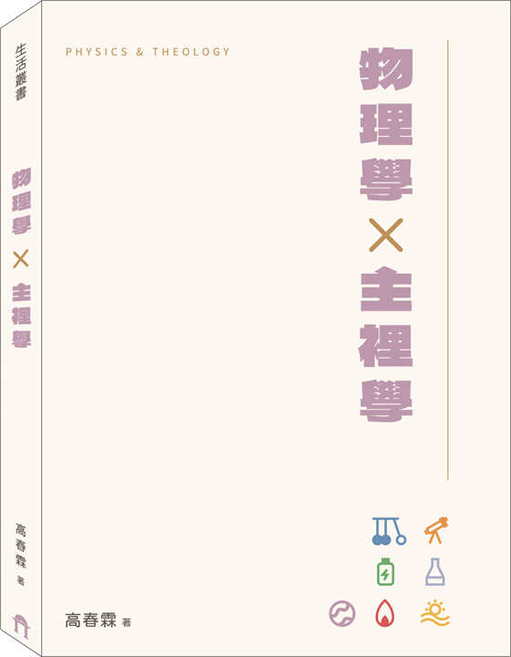

PHYSICS & THEOLOGY
力看不見，卻決定了萬物的運動；
主看不見，卻支撐著生命的軌跡。
01
ABOUT THE BOOK
一位長年站在國中物理教學現場的教師，退休之後，仍然持續思想、持續書寫，並將多年來對物理現象的觀察，轉化為屬靈的反省與信仰的體會，這是本書最鮮明、也最可貴的地方。
高春霖執事，高雄師範大學物理學系畢業，曾任國中物理教師，長年深耕基礎科學教育。物理學對他而言，不只是教室裡的課程內容，也不只是公式、定律與實驗，更是一扇認識世界秩序的窗口。正因為多年與物理為伍，他在受造世界的規律之中，看見的不只是知識的架構，更是值得人停下來思想的生命提醒。
除了教學與專業之外，高春霖執事多年來也十分重視讀經生活。閱讀聖經對他而言，是每日信仰生活中不可缺少的一部分。即便退休之後，這樣的習慣依然沒有改變，他仍然持續讀經、默想聖經的信息，讓神的話成為思想與生命的重要根基。這樣長年累積的讀經生活，也自然成為他書寫與反省的重要來源。
本書所收錄的文章，正是從這樣的生命背景中自然發展出來的。作者以物理教師特有的眼光，從壓力、浮力、反作用力、摩擦力、光、磁、波、熱、電、時間、空間，甚至黑洞、超導體等主題出發，從這些自然現象若放在信仰裡來看，能否成為幫助我們認識神、認識人、認識自己屬靈光景的一面鏡子？
這樣的寫作方式並不常見。它既不是學術論文，也不是單純的科普文章，更不是把科學名詞表面套進宗教語言裡而已。作者以教師長年累積的表達能力，把原本較抽象的物理概念講得清楚、講得生活化，再順勢轉入信仰上的聯想與反省，使讀者讀來不覺生硬，反而常有一種豁然開朗之感。
觀察物質、能量、運動與自然規律。
從受造世界回望神、人與生命。
02
TABLE OF CONTENTS